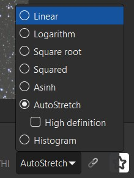
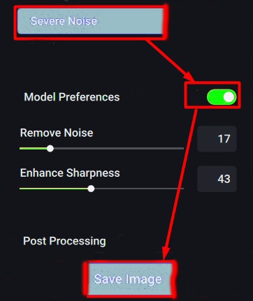

Siril guide
In this guide we will process the galaxy. Due to its small size (for me personally), processing such objects is easier, but the M31 is known for its difficulty in obtaining beautiful colors.
Each instrument will be separated. And each will be marked by difficulty:
🟩- does not depend on the type of DSO, taste or other factors. Can be repeated identically.
🟧- partly depends on the object, your sense of taste also affects at it, it
is advisable to select the parameters yourself.
🟥- highly depends on the image quality, DSO type, your taste, the availability of
external lighting, the quality of your screen and many additional factors. It is not
recommended to completely repeat the process in these tools; you need to select the parameters yourself.
Please note that this guide shows the possibilities of using various tools, but this does not mean that you should completely copy my processing method. Experiment, swap tools, repeat BGE or color saturation several times - complete freedom of action. So you will most likely be able to process it better than me ^_^
First we need to at least see something. Let's enable Autostretch:

Quite often you will notice that the entire image is very green or red.
In order to see something, you need unchain channels.

Now we need a crop in order to remove stacking artifacts
(they are close to the image borders), and also to make the galaxy better visible.
Hold down the left mouse button, draw a rectangle, center it on the galaxy and press the right button.

Color calibration allows you to adjust the color of the entire image.
This will also correct any green or red color you may have seen in the beginning.
Let's use PCC (Photometric Color Calibration):


Find your object (if you don't know what it's called, use
Google or
Astrometry).
Enter the focal length and pixel size (for this object 135mm and 3.7μm).

Wait for the PCC to complete its work:

In order for Starnet to work correctly, we need to return the image to linear:

Now let`s run Starnet:


Check the linear image pre-stretch checkbox:

It will take some time...

Stretching is the second most important task in all processing.
This is where you get all the detail that makes astrophotography so interesting.
First we need to do a preliminary stretch to see the object:

Select the logarithmic scale check box and move local stretch intensity slider to the max (15.0):

Now, by changing the Stretch factor you need to shift the peak of the histogram two squares to the right:

This is what it should look like:

This tool allows you to align and make the background more uniform:

Click Generate to create a grid of samples:


Now, by clicking the left mouse button to create a
sample and the right mouse button to delete it, we need to edit the grid
so that the samples only go to the background and not to the object:

When you have edited the grid, click Compute background and Apply:

Now the background looks smooth:

This tool is useful when you notice vertical lines in an image.
Take a closer look at the previous image, you will definitely notice them:

Let's get rid of them. Before doing this, be sure to save the image as prestretched.fit 32 bit!
This tool often crashes Siril:

Check protect highlights and, if the lines are not only horizontal,
but also vertical (or just vertical) check Vertical banding checkbox too.
If after Apply Siril crashes, reduce Ammount:

Now the lines are gone:

If the image is taken with a color camera, this means that the
image definitely has green noise. This is because color cameras typically
have twice as many green pixels as red and blue pixels. However, green noise
also appears during processing, even if it was not there initially:


No more green:

Now let's get back to GHT. Click on the area where the histogram peak is located.
Afterwards, move the Highlight protection slider so that it is identical to the
Symmetry point slider. Also set local stretch intensity to max:

Now, changing the linear stretch, shift the histogram to the left until there is a small gap left:

As you can see, this makes the background darker while maintaining the galaxy.
Now let's repeat the Stretch as we did in the beginning to get more details.
This is an important and difficult step: you must get as much detail as possible,
but you must not overexpose the galaxy, especially the core. If you see that the core
is too bright, move the local stretch intensity slider to the right until the core becomes less bright:

And now let's make the background darker again using the previous technique:

This tool allows you to get even more detail:

If you overdo it, the background will become noisy too.
Adjust the tiles grid size until you get more detail without
artifacts or looking too unnatural:

Depending on the image quality, the amount of noise may vary.
However, using a noise removal program, it is possible to obtain
more detail than without it. To do this, save the image as starless.tif
32 bit (.TIFF format). Then open the program, drag-and-drop the image, in
the settings on the right side, select Several noise and on Model Preference.
Press save.


After denoise the background became brighter. Let's fix this:

Another tool that will increase the detail of the object.

Press Execute:

It will also easily increase the noise if you overdo it. Each
subsequent slider affects more significant details. This means
that the first slider affects extremely fine detail, and, for example,
the second and third affect the dust ring. Select the parameters so that
the final image does not look too synthetic and does not change the color
too much (wavelets generate green noise):